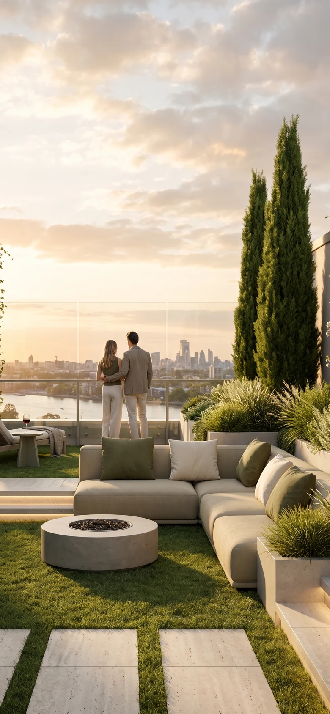

Light plays delicately across the viewing terraces, hiding among flowers, shimmering in treetops, arranging a quiet dance of shadows. Let nothing distract you from the twinkle of distant stars or the loving sparks in the eyes of your close ones.